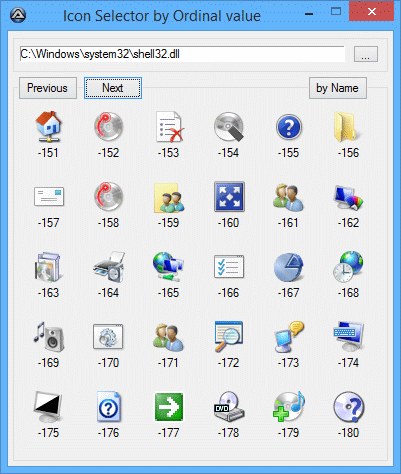

v3.3.18.0
© 1999-2025 Jonathan Bennett & команда AutoIt
AutoIt v3 – бесплатный скриптовый язык с BASIC-подобным синтаксисом, предназначенный для автоматизации Windows GUI и общего скриптинга. Он использует комбинацию имитации нажатий клавиш, движений мыши и работы с окнами и контролами, чтобы автоматизировать задачи способом, недоступным или ненадёжным для других языков (например, VBScript и SendKeys). AutoIt также очень компактен, самодостаточен и работает на всех версиях Windows "из коробки" – никаких надоедливых "runtime"-библиотек не требуется!
AutoIt изначально разрабатывался для массового развёртывания ПК – чтобы надёжно автоматизировать и настраивать тысячи компьютеров. Со временем он превратился в мощный язык, поддерживающий сложные выражения, пользовательские функции, циклы и всё остальное, что ожидают опытные скриптеры. Возможности:
AutoIt спроектирован максимально компактным и автономным – ему не нужны внешние .dll или записи в реестре, поэтому его безопасно использовать на серверах. Скрипты можно скомпилировать в самостоятельные исполняемые файлы с помощью Aut2Exe.
Также поставляется объединённая COM- и DLL-версия AutoIt под названием AutoItX, которая позволяет добавить уникальные возможности AutoIt в ваш любимый скриптовый или язык программирования!
Самое главное – AutoIt по-прежнему бесплатен. Но если вы хотите поддержать время, деньги и силы, потраченные на проект и хостинг сайта, можете сделать пожертвование на домашней странице AutoIt.
BASIC-подобный синтаксис и богатый набор функций
AutoIt имеет BASIC-подобный синтаксис: большинство тех, кто когда-либо писал скрипты или работал с языками высокого уровня, освоят его без труда.
AutoIt начинался как простой инструмент автоматизации, но теперь содержит функции и возможности, позволяющие использовать его как универсальный скриптовый язык (с великолепной автоматизацией, конечно же!). Возможности языка:
Встроенный редактор с подсветкой синтаксиса
AutoIt поставляется с настроенной "облегчённой" версией SciTE, которая упрощает редактирование скриптов. Также можно загрузить полную версию SciTE с дополнительными инструментами для ещё большего удобства.
Автономность и компактность
AutoIt – очень маленькое и автономное приложение, не зависящее от тяжеловесных runtime-библиотек вроде .NET или VB. Для запуска скриптов AutoIt нужны только основной исполняемый файл (AutoIt3.exe) и сам скрипт. Скрипты также можно упаковать в самостоятельные исполняемые файлы встроенным компилятором Aut2Exe.
Интернационализация и поддержка 64-бит
AutoIt полностью поддерживает Unicode и включает x64-версии всех основных компонентов! Многие ли бесплатные скриптовые языки могут этим похвастаться?
Имитация клавиатуры и мыши
Много времени потрачено на оптимизацию функций имитации нажатий клавиш и движений мыши, чтобы они работали максимально точно во всех версиях Windows. Все процедуры мыши и клавиатуры широко настраиваются – как по "скорости" имитации, так и по поведению.
Управление окнами
Можно перемещать, скрывать, показывать, изменять размер, активировать, закрывать и почти что угодно делать с окнами. На окно можно ссылаться по заголовку, тексту, размеру, положению, классу и даже по внутренним дескрипторам Win32 API.
Контролы
Получайте информацию и взаимодействуйте напрямую с полями ввода, флажками, списками, выпадающими списками, кнопками, строкой состояния – без риска потерять нажатия клавиш. Можно работать с контролами даже в неактивных окнах!
Графические интерфейсы (GUI)
AutoIt v3 позволяет создавать сложные GUI – вроде показанных ниже!


И многое-многое другое...